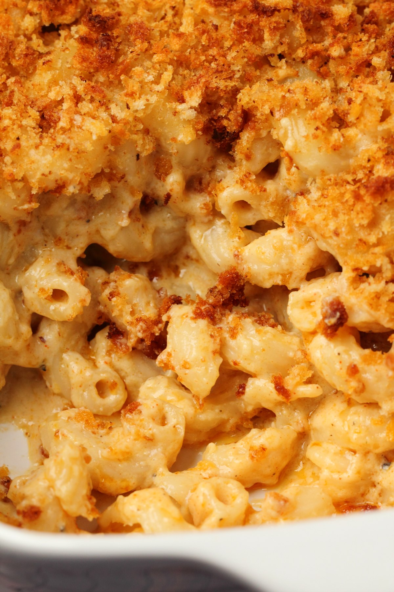

A vegan mac and cheese without the vegan cheese! This recipe uses vegan butter, all purpose flour, coconut milk and vegetable sauce to make a thick and creamy white sauce. Along with some dijon mustard, nutritional yeast, onion powder, garlic powder, smoked paprika, salt and pepper.